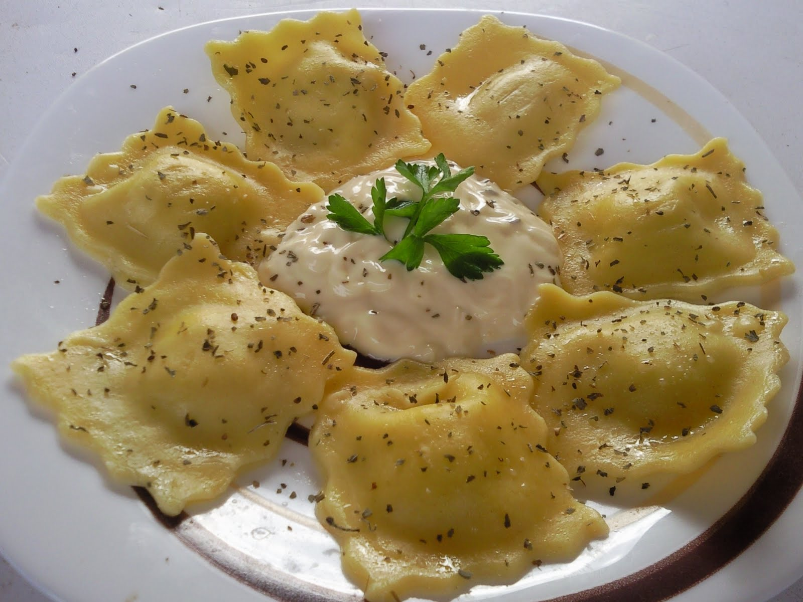

Recetas
Raviolis de Queso

Descubre lo fácil es que elaborar tus propios raviolis caseros rellenos de una mezcla de cuatro quesos. Un delicioso plato de pasta ¡con un sabor único!
Ingredientes para la receta de raviolis de queso
- 2 huevos
- 200 gr. de harina
- 350 gr. de mezcla de cuatro quesos: parmesano, emmental, gouda y roquefort
- Sal
¿Cómo hacer la receta de raviolis de queso?
- Vamos a preparar nuestros propios raviolis de queso caseros y, para ello, ponemos la harina sobre una superficie de trabajo. Formamos con ella un volcán y en el centro, cascamos los huevos y le añadimos media cucharadita rasa de sal.
Trabajaremos la masa de nuestros raviolis de queso hasta que podamos formar una bola fácil de despegar. En ese momento, la dividimos en dos partes, las envolvemos en film transparente y las dejamos reposar unos veinte minutos.
- Transcurrido el tiempo, cogemos una de las bolas de masa para los raviolis de queso y la extendemos. Con ayuda de un rodillo hacemos una lámina fina. Reservamos.
- Picamos el queso en una tabla con un cuchillo, y hacemos bolitas con los dedos de tamaño variable, dependiendo de cuánto relleno deseemos introducir en los raviolis. Hacemos daditos pequeños.
- Tomamos unos cuantos y los colocamos, formando un montoncito, sobre un lado de la masa. Repetimos la operación todas la veces que admita la masa, eso sí, dejando espacio entre cada montoncito de queso, porque luego cubriremos el conjunto con la otra mitad de la masa, y cortaremos en cuadraditos para hacer los raviolis de queso.
- Al terminar los montoncitos de queso, extendemos la otra mitad de la masa y formamos otra lámina. La colocamos sobre la anterior, que estará tapizada de montoncitos de queso, y prensamos bien la masa alrededor de los montones.
- Con la ayuda de un cuchillo o un cortapastas dentado, cortamos los raviolis de queso. Con los dedos húmedos, presionamos los bordes para que queden bien pegados, después de habernos asegurado de que no queda aire dentro de los raviolis.
- Ya tenemos los raviolis de queso listos para cocerlos y acompañarlos de la salsa para pasta que más nos guste.